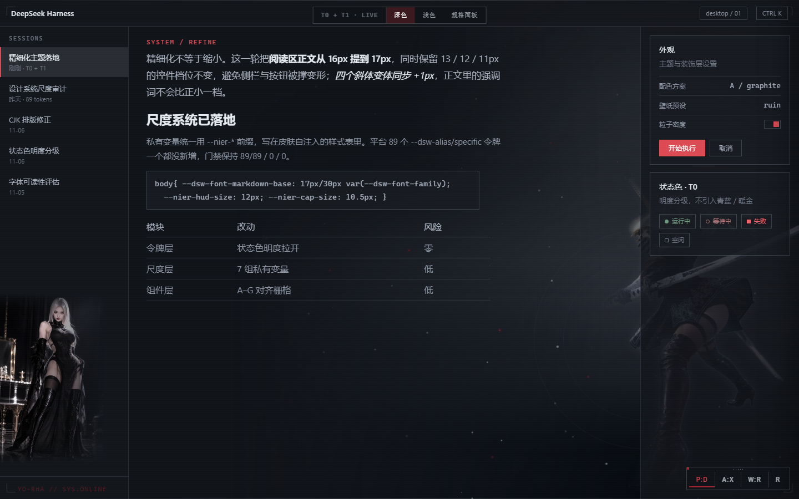
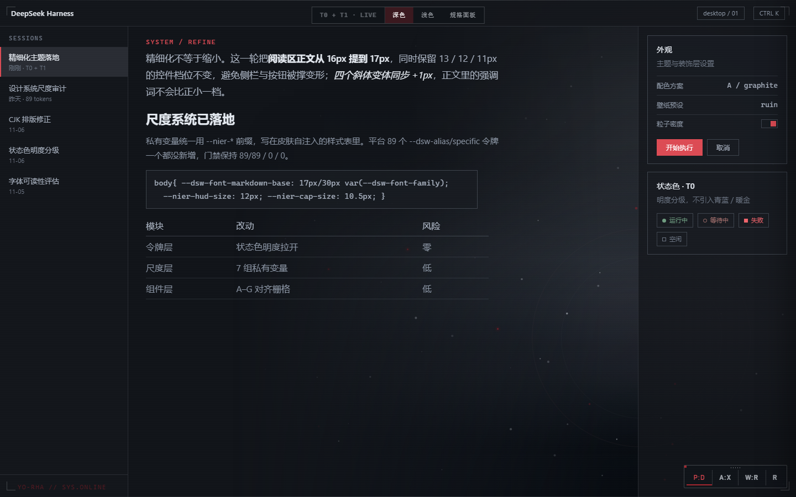
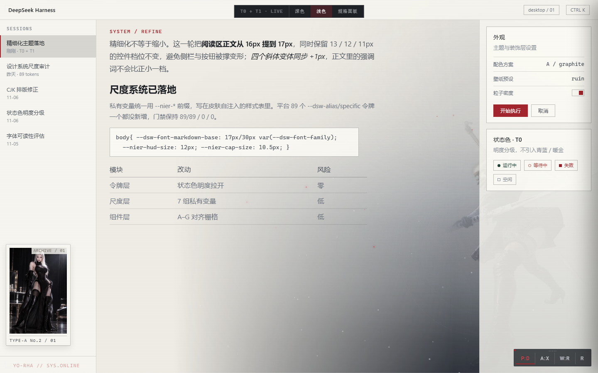
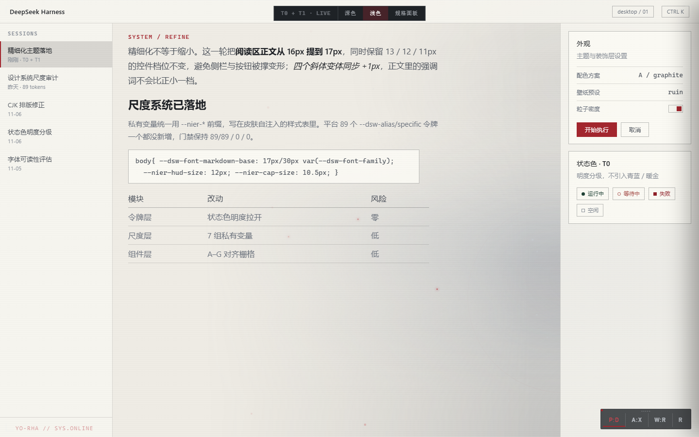

深色 · 之前2 个角色

判断依据不是观感，是几何：右栏设置面板宽 286px 且占满整高（y 48→900）。 她的框是 378 × 615，从 x 1062 起——76% 的面积在面板后面，露出来的只有 92px。 任何尺寸都逃不掉这个结构：再大，遮得更多；小到不被遮，就只剩 92px 宽的暗斑。 左侧 A2 占掉侧栏 88% 的宽度，且在浅色下是全彩照片＋白框，是整页最重的物体，却落在最不重要的那一列。
深色 · 之前2 个角色

深色 · 之后0 个角色

浅色 · 之前2 个角色

浅色 · 之后0 个角色

移除角色后，浅色画面那片灰雾才露出来。它来自 .nier-wallpaper——暗色预设的“废土地面”，
一条 rgba(16,20,28,.94) 的底部渐变。它从来没有浅色覆盖规则，等于在纸上刷了 94% 的黑。
现在补了一套同结构、约 1/9 强度的浅色版本：地面还在，暖红晕还在，但纸还是纸。
#dsh-skin-nier-figure、#dsh-skin-nier-a2nier-near 交互：光标进入右侧 38% 就整场提亮——无提示、无反馈、触发区过大.nier-pod 及 3 条伪元素规则.nier-boot-char）没动。那里她是居中、完整、有理由出现的——
角色该活在启动画面，不该活在阅读画面。NieR 原作也是如此。